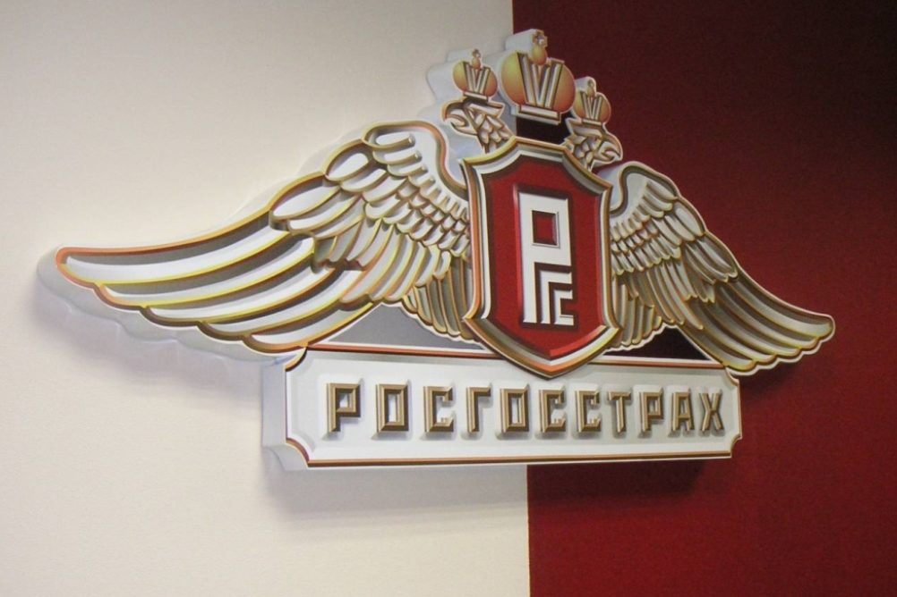

Горин А. В.
РГЗ Темергалеева Никиты
Жмак Е. И.
История крупнейшей страховой компании РФ – «Росгосстрах»

Система страхования играет важную роль в экономике страны в целом и ее граждан в частности.
Промышленная деятельность, предпринимательство, жизнь, здоровье и имущество граждан подвергаются постоянным рискам,
которые никуда не исчезают, а скорее становятся все более актуальными. Выбирая компанию, заинтересованные
лица ориентируются уже не на броские названия и громкие лозунги, а на их опыт, надежность и стабильность.
Одной из таких организаций является Росгосстрах, история которой насчитывает уже почти век работы в самых разных,
а порой и невероятно сложных условиях. Сегодня это несомненный лидер в сфере страхового бизнеса, неизменно занимающий верхнюю
строку во всех существующих рейтингах.
О страховой компании «Росгосстрах»
В наше время «Росгосстрах» — это крупнейшая страховая компания России по объемам сборов, выплат, собственных средств, количеству представительств и занятого персонала. Подобный успех возник не внезапно и не сразу, для его достижения было потрачено сто лет развития, становления, опытов и экспериментов. Вместе с достижениями были и неудачи, граничащие с банкротством, но все это осталось позади, а приобретенный опыт бесценен.
Крупнейшая страховая компания России «Росгосстрах» (РГС) по определению в организационно-правовой форме является публичным акционерным обществом (ПАО). Среди клиентов финансовой структуры государственные и коммерческие организации, частные предприниматели, практически все категории физических лиц.
Сфера охвата клиентов распространяется на добровольные и обязательные виды страхования. Право на проведение деятельности на территории РФ и за ее пределами предоставлено лицензиями Центрального Банка, выданными в 2018 году и действующими по сегодняшний день.